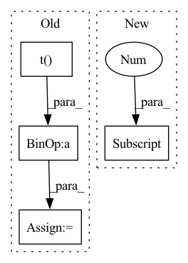

Pattern ID :13652
Before Change
output = ctx.method_return
// transpose weight
weight_transpose = weight.t()
ctx.method_args = [weight]
ctx.method_kwargs = {}
ctx.method_return = weight_transpose
convert_t(ctx)
// matmul
matmul_output = input.matmul(weight_transpose)
ctx.method_args = [input, weight]
ctx.method_kwargs = {}
ctx.method_return = matmul_output
convert_matmul(ctx)
// add bias
if bias is not None:
add_bias_output = matmul_output + bias
ctx.method_args = [matmul_output, bias]
ctx.method_return = add_bias_output
convert_add(ctx)
output._trt = add_bias_output._trt
else:After Change
output = ctx.method_return
in_channels = weight.shape[1]
out_channels = weight.shape[0]
module = torch.nn.Linear(in_channels, out_channels, bias is not None)
module.weight = torch.nn.Parameter(weight)
if bias is not None:
module.bias = torch.nn.Parameter(bias)In pattern: SUPERPATTERN
Frequency: 4
Non-data size: 4
Instances Fragment ID: 45769594
Project Name: grimoire/torch2trt_dynamic
Commit Name: 6b7a712d3a248cfcf94e95f9769e2bd8a27c611f
Time: 2021-02-23
Author: streetyao@live.com
File Name: torch2trt_dynamic/converters/linear.py
M Class Name: AnonimousClass
N Class Name: AnonimousClass
M Method Name: convert_linear(1)
N Method Name: convert_linear(1)
M Parent Class:
N Parent Class:
M File Name: torch2trt_dynamic/converters/linear.py
N File Name: torch2trt_dynamic/converters/linear.py
M Start Line: 14
M End Line: 44
N Start Line: 11
N End Line: 25
Before Change
bond_buckets[native_bond_idxs[1], native_bond_idxs[0]] = cutoffs.shape[0]
// find the indexes - symmetric and we dont want the diag
close_bond_idxs = ( bond_buckets < len(cutoffs) ).triu(diagonal=1)
close_bond_idxs = ( close_bond_idxs + close_bond_idxs.t() ).nonzero().t()
// merge all bonds
whole_bond_idxs = torch.cat([native_bond_idxs, close_bond_idxs], dim=-1)
After Change
bond_buckets += len(cutoffs) * torch.eye(bond_buckets.shape[0]).long()
close_bond_idxs = ( bond_buckets < len(cutoffs) ).nonzero().t()
// merge all bonds
if close_bond_idxs.shape[0] > 0:
whole_bond_idxs = torch.cat([native_bond_idxs, close_bond_idxs], dim=-1)
else:
whole_bond_idxs = native_bond_idxs Fragment ID: 45769595
Project Name: lucidrains/geometric-vector-perceptron
Commit Name: 22f9b33ad0772e693055c0076bdd5607b66fbe2d
Time: 2021-02-28
Author: ericalcaide1@gmail.com
File Name: examples/data_utils.py
M Class Name: AnonimousClass
N Class Name: AnonimousClass
M Method Name: encode_whole_bonds(5)
N Method Name: encode_whole_bonds(5)
M Parent Class:
N Parent Class:
M File Name: examples/data_utils.py
N File Name: examples/data_utils.py
M Start Line: 345
M End Line: 379
N Start Line: 339
N End Line: 378
Before Change
logits = self.model.classify(x)
L = L.view_as(logits.t()).t()
// Calculate entropy H(q(y|x)) and sum over all labels
H = -torch.sum(torch.mul(logits, torch.log(logits + 1e-8)), dim=-1)
L = torch.sum(torch.mul(logits, L), dim=-1)
// Equivalent to -U(x)
U = L + H
return torch.mean(U)
After Change
self.sampler = sampler
def forward(self, x, y=None, likelihood_func=losses.reconstruction_loss):
batch_size = x.shape[0]
is_labelled = False if y is None else True
// Prepare for sampling
xs, ys = (x, y) Fragment ID: 45769567
Project Name: bioshape-lab/pirounet
Commit Name: 905ff42f59d43741a1e02f8c8f163e144aa2c47e
Time: 2022-05-26
Author: nmiolane@harold.ece.ucsb.edu
File Name: move/models/dgm_lstm_vae.py
M Class Name: SVI
N Class Name: SVI
M Method Name: forward(4)
N Method Name: forward(4)
M Parent Class: torch.nn.Module
N Parent Class: torch.nn.Module
M File Name: move/models/dgm_lstm_vae.py
N File Name: move/models/dgm_lstm_vae.py
M Start Line: 223
M End Line: 237
N Start Line: 196
N End Line: 255
Before Change
H1bar = H1 - H1.mean(dim=1).unsqueeze(dim=1)
H2bar = H2 - H2.mean(dim=1).unsqueeze(dim=1)
SigmaHat12 = (1.0 / (m - 1)) * torch.matmul(H1bar, H2bar.t() )
SigmaHat11 = (1 - self.r) * (1.0 / (m - 1)) * torch.matmul(H1bar,
H1bar.t()) + self.r * torch.eye(o1,
dtype=torch.double,
device=H1.device).float()
SigmaHat22 = (1 - self.r) * (1.0 / (m - 1)) * torch.matmul(H2bar,
H2bar.t()) + self.r * torch.eye(o2,
dtype=torch.double,
device=H2.device).float()
// performs the inverse square root of the covariance matrices by the cholesky decomposition. This is more stable than using SVD
SigmaHat11RootInv = torch.linalg.inv(torch.linalg.cholesky(_minimal_regularisation(SigmaHat11, self.eps)))
SigmaHat22RootInv = torch.linalg.inv(torch.linalg.cholesky(_minimal_regularisation(SigmaHat22, self.eps)))
Tval = torch.matmul(torch.matmul(SigmaHat11RootInv,
SigmaHat12), SigmaHat22RootInv)
trace_TT = torch.matmul(Tval.t(), Tval)
eigvals = torch.real(torch.linalg.eigvals(trace_TT))
eigvals = eigvals[torch.gt(eigvals, self.eps)]
corr = torch.sum(torch.sqrt(eigvals))After Change
o1 = H1.shape[1]
o2 = H2.shape[1]
n = H1.shape[0]
H1bar, H2bar = _demean(H1, H2)
SigmaHat12 = (1.0 / (n - 1)) * torch.matmul(H1bar.T, H2bar) Fragment ID: 45769532
Project Name: jameschapman19/cca_zoo
Commit Name: 109657aa0c08d40d8571bc16e653094cb6206408
Time: 2021-07-14
Author: james.chapman.19@ucl.ac.uk
File Name: cca_zoo/deepmodels/objectives.py
M Class Name: CCA
N Class Name: CCA
M Method Name: loss(3)
N Method Name: loss(3)
M Parent Class:
N Parent Class:
M File Name: cca_zoo/deepmodels/objectives.py
N File Name: cca_zoo/deepmodels/objectives.py
M Start Line: 143
M End Line: 171
N Start Line: 145
N End Line: 166